Udaipur, 6–7 Oct 2026 · 17 creators and pairs across 16 sessions (21 audio recordings, 5 phone videos) · structured on the Rural LOD question framework and checked against Rural PFS hypotheses H1–H6
Over two days in Udaipur we sat with 17 creators and creator pairs who had signed up for the Meesho Creator Club (MCC) and asked all of them the same questions: what they do, how they found us, what they expected to earn, what they did after opening the app, and when and why they stop posting. The recruitment sheet had 22 names across four groups, from people who never got a post live to one creator earning around ₹20K a month. Every conversation was recorded, and in five cases we filmed the creator's own phone while they made a link, connected Instagram or built a video.
The short version: the creators we met are not short of audience or effort. Several have reels with hundreds of thousands of views, several post two or three times a day, and five of them have taught themselves a four-app AI workflow to make product videos without showing their face. What separates the people earning from the people stalled is whether anyone ever showed them the first working post. Nobody in the sample learned it from Meesho. They learned from YouTube, from a friend, or from us at the table.
How to use this page: ▶ buttons play the exact moment from the recording. "Transcript" opens the full auto-transcript with click-to-seek audio. Screenshots open full size. Clips are cut from the phone videos and play inline. Keep the lod_media folder next to this file.
Seven of the 17 never got a working affiliate post live. Some signed up seven months ago. Creator 8 posted one reel and stopped because she did not know a link was the next step. Creator 1 has movie edits with millions of views and has been on MCC for two months without making a single link. Creator 3 spent five or six months looking for Meesho inside Instagram's own product-tag list, where only Myntra and Flipkart appear, and concluded it could not be done. In every one of these cases the team walked them through it at the table in about five minutes: connect Instagram, pick a product, make the link, post with Auto-DM or a story. The reaction each time was some version of "that's it?". The high earners had the same walkthrough earlier in life, from a friend (Creator 14) or from another affiliate platform (Creator 17). That is the whole difference.
We filmed one creator trying to connect Instagram from inside the Meesho app. The Instagram login returned "Can't find account" twice before she retried with her phone number and discovered she also had to switch to a creator account, pick a category and answer "which best describes you". None of this is explained in the app, and a creator doing it alone at home would reasonably assume the feature is broken. Every later step depends on this one, so a silent failure here is a silent loss of the creator.
Five creators make videos without appearing on camera. Creator 16 showed the full chain on video: screenshot a Meesho product, upload the photos to ChatGPT and ask it to write a video prompt, paste the prompt and the image into Google Flow, wait for a clip of a model walking in the kurti, download it, then make the Meesho link and share to an Instagram story. Creator 4 runs the identical recipe. Creator 13 uses Gemini to generate four outfit images from one product photo. The reasons are consistent: camera shyness, nowhere to shoot, and no cash to order samples. The reasons it breaks are also consistent: downloading the generated video, saving it to the gallery, and knowing which products carry commission. This is a format Meesho could own with a single in-app "make a video from this product" button.
Five of the 17 are students: a nursing student, a B.Tech student from Jammu, a board-exam student, a beauty creator who told us her exams come every two months, and the sister in the brother-and-sister pair who is doing a Master's in Psychology. Their posting stops with the exam calendar and, in most cases, would restart after it. Treating that gap as churn and sending them generic win-back messages misreads what is happening. Two of them also told us their parents allow this only if income shows up, which means the first commission matters more for a student than for anyone else.
Creator 2 joined specifically for the 14-day return window. At the other end, Creator 5 stopped ordering samples because she was afraid of being charged or blocked for returning too much, and Creator 7 had never heard that creators get 14 days where normal users get seven. Creator 17, the high earner, had her MCC account blocked after a dispute with a local delivery agent who was unhappy with her returns, which is exactly the fear the others described. The benefit exists, the fear exists, and the app does not put the one against the other anywhere a creator would see it.
Creator 10 has reels at 716K and 166K views, 1,660 followers, and zero earnings. Nobody asked her for a link, and she had no way of knowing whether the problem was the product, the caption, the call to action or the platform. She checked insights once a week, saw the numbers go nowhere, and stopped. Creator 14, who is earning, showed us an app where several products display 0% commission next to others at 10%. Creator 13 did not know what they earn if the buyer clicks their link and buys something else. Creator 17 prefers Wishlink because it shows daily clicks and orders per brand. The pattern is the same at every level: there is no feedback loop between a post and an outcome, so creators cannot learn.
Creator 17 told us about calls from people claiming to be Meesho's call centre: "your order was delivered but not updated, share the OTP". The OTP triggers a return and the refund goes to the caller's bank account. It happened to her once while she was cooking. She also described her account block after the delivery-agent dispute. None of the creators we met had received any call or message from Meesho since signing up, so the only "Meesho" voice some of them have heard is the scammer's.
Demographics pulled from what creators said on tape plus the field team's notes. Blank means it was not asked or not captured. Low earners = not activated (7), posting with low sales (6), and the reseller (1). High earners = the three earning creators, of whom only one clears ₹5K a month, and mostly on Wishlink.
H1 was not asked systematically.
| ID | Who | Life stage | Place | On MCC | Platform & content | Earnings | Group | Recordings |
|---|---|---|---|---|---|---|---|---|
| Creator 1 | Video editor, man, ~4.5K followers, movie edits with millions of views | Works (editing) | Udaipur | ~2 months | IG reels; wants faceless | ₹0 | Not activated | |
| Creator 2 | Ethnic-wear creator, woman | Works 11-hour shifts | Udaipur | Recent | IG reels + Auto-DM, 1 reel / 2–3 days | Low | Posting, low sales | |
| Creator 3 | Scooter and vlog creator, man | — | Udaipur | 5–6 months | IG; tags Myntra/Flipkart natively | ₹0 | Not activated | |
| Creator 4 | Fashion and lifestyle, faceless AI | — | Udaipur | 10–15 days | IG, 2 posts/day; ChatGPT + Google Flow + CallArt | ₹0 so far | Posting, low sales | |
| Creator 5 | Nursing student GenZ | Student; parents disapprove | Udaipur | ~1 year since sign-up | IG outfit photos (2–3 posts), stopped | ₹0 | Not activated | |
| Creator 6 | Lifestyle creator | — | Udaipur | 2 months | IG + YouTube Shorts, 2–3 reels/day | Low | Posting, low sales | |
| Creator 7 | Try-on creator, woman | — | Udaipur | ~1 month | Tried YouTube links; IG not connected | ₹0 | Not activated | |
| Creator 8 | Data-entry worker | Works | Udaipur | Recent | IG; 1 reel, then stopped | ₹0 | Not activated | |
| Creator 9 | B.Tech student from Jammu, man GenZ | Student | Studying in Udaipur | 4–5 months | IG; 1–2 reels so far | ₹0 | Not activated | |
| Creator 10 | Beauty and outfits, woman; 1,660 followers, reels at 716K and 166K views GenZ | Student (exams every 2 months) | Udaipur | Few months | IG reels, 1 year on IG; checks insights weekly | ₹0; came for a "₹600" ad | Posting, low sales | |
| Creator 11 | Story sharer | — | Udaipur | Recent | WhatsApp and IG story links, no reels | Low | Posting, low sales | |
| Creator 12 | Two AI creators (short clips) | — | Udaipur | ~2 months | YouTube Create + AI | Low | Posting, low sales | |
| Creator 13 | Himanshi + Rishika, two women | — | Udaipur | Few months | YouTube + IG; Gemini images, faceless AI + real | Earning (below ₹5K) | Earning | |
| Creator 14 | Hanuman + sister (Master's in Psychology) GenZ | Student (sister) | Udaipur | 4–5 months | IG gym and lifestyle + Auto-DM | Earning (below ₹5K) | Earning | |
| Creator 15 | Board-exam student GenZ | Student | Udaipur | 1 month | FB Marketplace reselling + FB ads | Margin on resale | Reseller | |
| Creator 16 | AI faceless creator, man | Has a day job; came wanting to sell | Udaipur | 7 months | IG; ChatGPT + Google Flow | ₹0 | Not activated | |
| Creator 17 | Jewellery and fashion creator, woman | Full-time creator | Udaipur | Long-time | IG; Wishlink + MCC | ~₹20K/month, mostly Wishlink | Earning |
Creators are numbered in the order of this table. The transcript drawer shows the original recording file name next to each one. Life stage and place are filled only where stated on tape or in the field notes.
The low and high earners we met look alike on paper. Both groups have been on Instagram for years, both have real audiences, and both found MCC through the same channels: an Instagram or YouTube ad in seven cases, a creator's reel or an "earn money" video in three, a friend in one, and in Creator 1's case a Meesho WhatsApp message he opened by mistake. The difference starts with what they expected. The low earners came with a picture painted by ads and reels, including one ad that promised ₹600, and expected money to follow a post. When it did not, they had no second idea. The high earners came with a working model of affiliate already in their head, either from a friend who showed them (Creator 14) or from Wishlink (Creator 17), and treated MCC as one more channel to run the same loop on.
Time is the other quiet divider. Four creators have jobs with long or fixed hours: Creator 2 works 11-hour shifts and takes three hours to make one post, Creator 8 does data entry, Creator 16 has a day job and tried to fit a four-app AI workflow around it. Five are students. Only the earning creators described content as the main thing they do in a day. On the phone-and-account question (H1), we saw no case of a woman using a male relative's phone. Pairs were siblings or friends sharing the work, not the device. We did not ask this systematically, so H1 stays open.
Framework questions: What do you do, how does your day go? Since when on Instagram, who follows you? How did you hear about MCC? How much did you expect to earn, how much now? Whose phone is this, who runs the account?
Every creator's full transcript is one click away in the table above.
We asked every creator to open the app and make a link while we watched. This was the most revealing ten minutes of each interview. The stalled creators got stuck in three places: connecting Instagram, which failed outright for one creator on video; finding where links are made at all, which Creator 3 and Creator 1 had been looking for inside Instagram's own product tags; and what to do with the link once copied, which Creator 6 had tried to paste into YouTube Shorts where it does not work. The earning creators did product, Get commission link, Share on Insta story or Auto-DM in under a minute, without talking.
Comprehension of commission is thin at every level. Creator 4 posts twice a day and did not know how to tell which products carry commission. Creator 2 had been posting with Auto-DM for weeks and did not know that a buyer who clicks her link and buys a different saree earns her nothing. Creator 14, who earns, showed us products at 0% commission and could not say whether that was a bug or a rule. The high earners know the flow but not the rules; the low earners know neither. And when we asked how they know they did it right, nobody had an answer other than "views", which is the one number that does not tell them.
Framework questions: What did you do after opening the app the first time? Make a link and show us. What's the difference between Auto-DM and story? How and when does commission come? How do you know you did it right?
6 Oct, 4:28 pm. The team walks a creator (Gudiya Gupta, creator ID 70867838, from the recruitment sheet; her login is on screen) through Creator → Connect Instagram. The Instagram login inside the Meesho app returns "Can't find account" until she retries with her number and completes the creator-account setup.
55 s clip · Login inside the app fails on the first attempts.
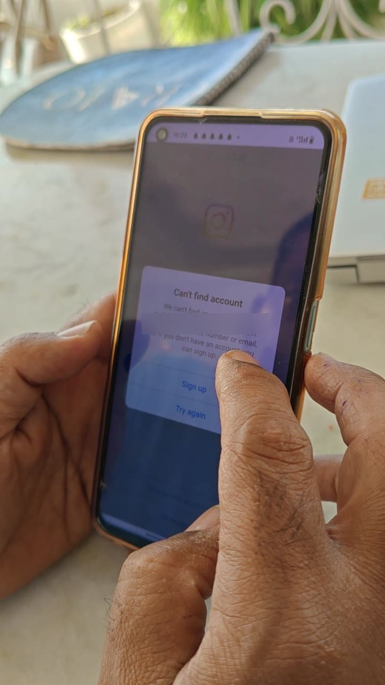
"Can't find account" on IG login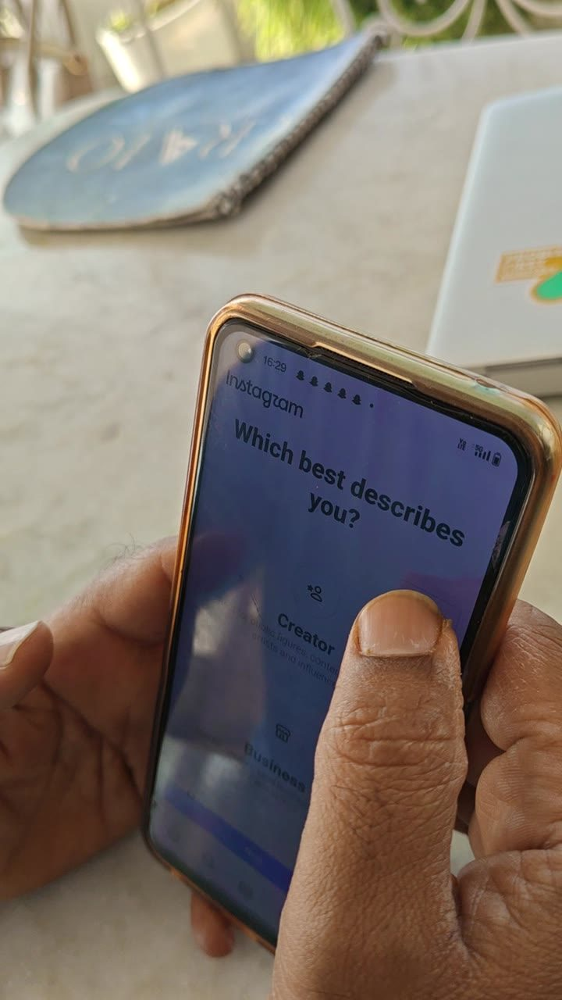
Creator-account setup steps she had never done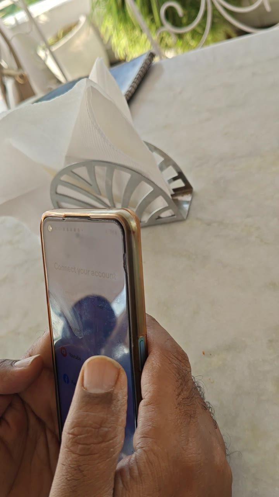
"Connect your account" after retries6 Oct, 2:27 pm. Creator 1 shows how he tags products on Instagram: Edit → add product → search. Myntra and Flipkart products appear; Meesho does not. He also shows Instagram's "branded content" settings. This is where a creator with millions of views expects affiliate to live.
70 s clip · "Meesho ka link bhi aayega kya?" He searches and can't find it.
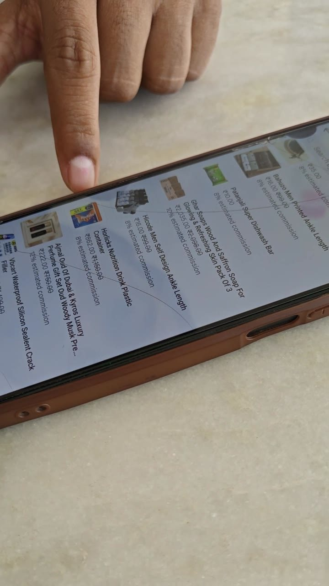
Instagram's product list in the reel editor7 Oct, 10:25 am. Creator 14 (Hanuman) on a cracked phone shows the Meesho app flow he uses daily: pick products, create the link, set up "Send commission links automatically to DMs". Several products in his app show 0% commission while others show 10%, which is the bug flagged in the field notes.
85 s clip · The flow an active creator runs 2–3 times a day.
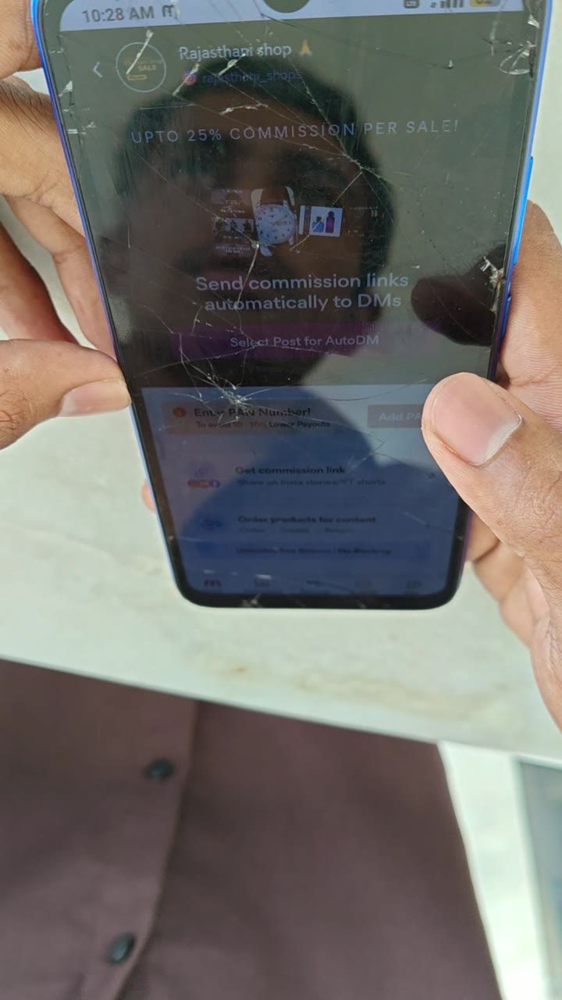
"Send commission links automatically to DMs"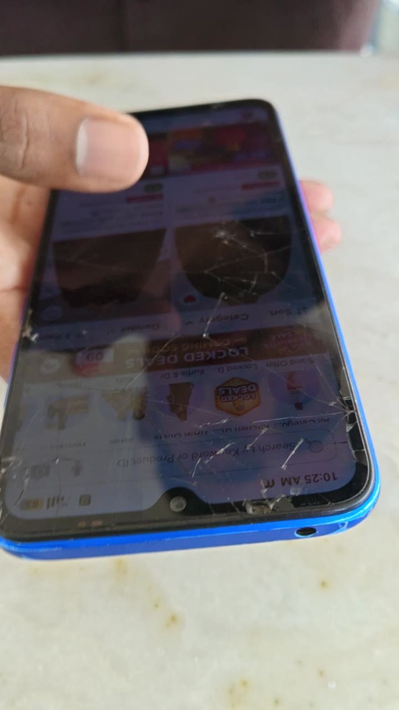
His daily starting point: Meesho home and sale bannerPosting frequency is not the problem. Creator 6 batch-shoots five or six videos in a sitting and posts two or three reels a day. Creator 4 posts twice a day. Creator 14 posts two or three times a day with Auto-DM on. The rural creators who are active post more than most metro creators would. What breaks is continuity. The low earners post in bursts and then go quiet, and the reasons they gave are specific: no sales after a burst (Creators 10 and 3), not knowing the next step (Creators 8 and 7), exams (Creators 5, 10, 15 and the sister in 14), parents who want to see income first (Creator 5), fear of return charges (Creator 5), camera shyness (Creator 1), and simply no time around a shift (Creators 2 and 8).
The high earners stop for different reasons. Creator 17 cut back after her account was blocked and her orders fell from 10 to 15 a day to a trickle. Creator 14 is unsure whether posting products that show 0% commission is worth the effort. In other words, the low earners stop because nothing happens, and the high earners stop when the platform gets in the way. Time per post also differs sharply: a faceless AI post takes 30 to 60 minutes across four apps, a quick phone reel with a product in hand takes 10 to 30 minutes, and the creators with a routine spend the morning picking products, shoot or generate in the afternoon, and check DMs and orders at night. Nobody in the low group described a routine at all.
Framework questions: How many times a week do you post, and when? How long does one post take? When do you stop posting, and why? Do you have a routine?
7 Oct, 11:24 am. Creator 16 (7 months on MCC, no sales yet) shows exactly how he makes a video without showing his face. It takes four apps and a saved prompt. The output looks like a real model walking in the kurti. He then makes the commission link and shares it to his Instagram story.
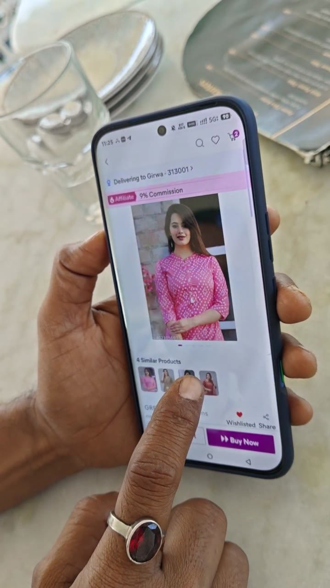
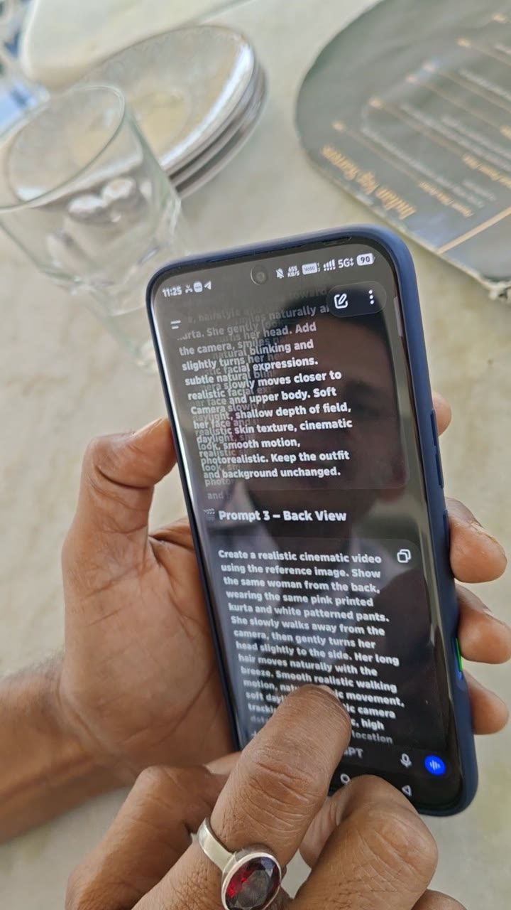
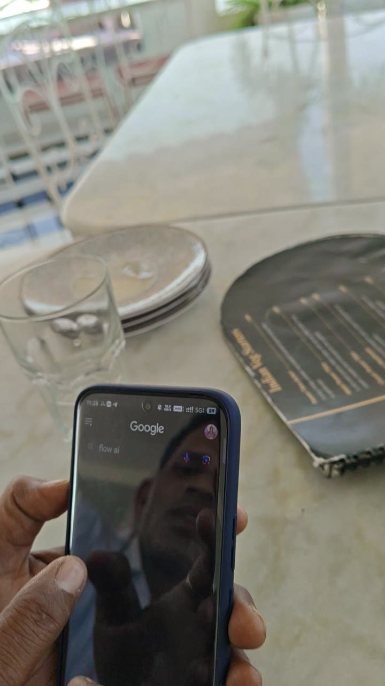
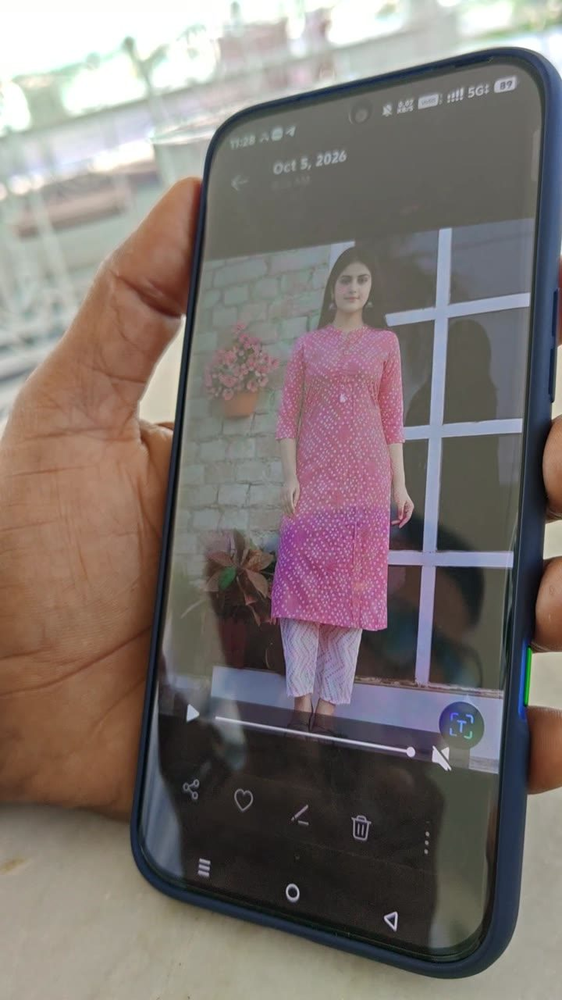
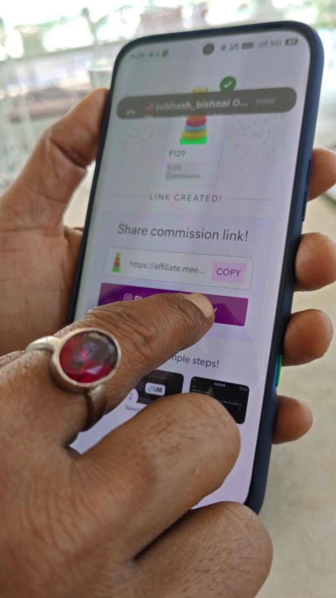
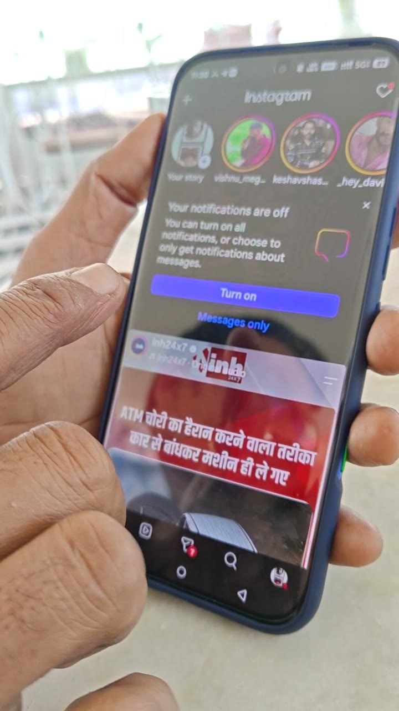
90 s clip · "Mujhe prompt bana ke diya… Google Flow… YouTube se dekha tha."
105 s clip · From the generated video to "Share on Insta Story".
7 Oct, 10:44 am. Creator 13 (Himanshi and Rishika) generate four images of a woman in a blue outfit with Gemini from a Meesho product photo, then pick products, create the link and switch on Auto-DM. The 9 Oct Mega Blockbuster Sale banner is already on their app.
60 s clip · Faceless content without ordering the product.
50 s clip · Earning creators do this without help.
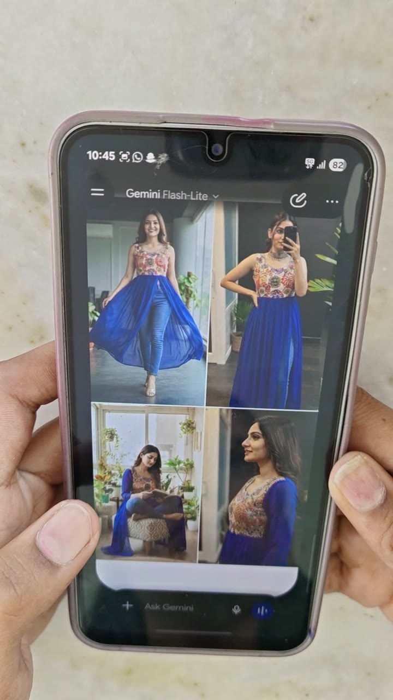
Gemini output from one product photo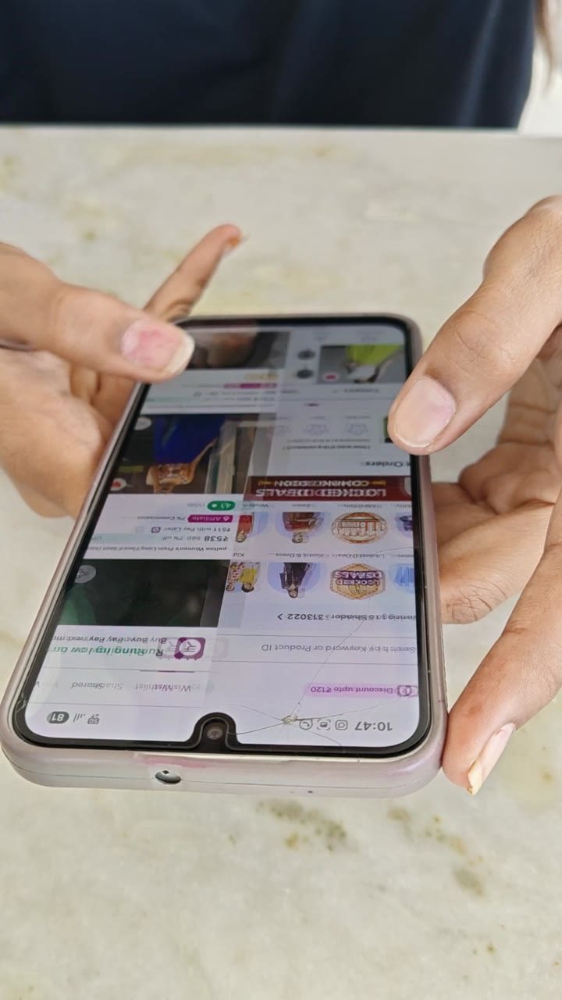
Sale banner: "creators earn ~3x in sale week" landedThree of the six Rural PFS hypotheses held up clearly. Creators do not know how to start (H3), they have no feedback loop (H4), and they stop posting (H5), and the interviews put faces and reasons on each. H2, that low earners treat MCC as a side experiment with unrealistic expectations while high earners treat it as a business, is half right: the low side holds, but our only high earner above ₹5K runs her business mainly on Wishlink, so the sample cannot say what a high-earning MCC-first rural creator looks like. H1 (women using a male relative's phone) and H6 (rural creators post less than metro) were not tested; the first was not asked consistently and the second needs a metro comparison group.
| # | Hypothesis | Verdict | What we saw | Low vs high gap |
|---|---|---|---|---|
| H1 | Women in T3/T4 use a male family member's phone | Not tested | Not asked systematically. Family pairs (brother and sister, two sisters) were seen; no case of a male relative's phone. | — |
| H2 | Low earners see MCC as a side experiment with unrealistic hopes; high earners treat it as a business | Partly | Low side holds: joined for a "₹600" ad and quit; job holders post rarely; students pause for exams. High side unclear: the only high earner earns mostly on Wishlink. | Large on expectations; small on audience size |
| H3 | Creators don't know how to start | Supported | 7 of 17 stalled at IG connect, the first link or the first post; IG connect fails on video; all learned from YouTube. | This is the gap |
| H4 | No feedback loop to know if they're doing it right | Supported | High views with no sales and no reason given; 0% commission shown; unclear attribution; Wishlink's dashboard preferred. | Both sides, worse for low |
| H5 | Creators stop posting | Supported | Reasons: no sales, don't know how, low reach, exams, family pressure, fear of return charges, camera shyness, no time. | Low earners stop on their own; high earners stop when blocked |
| H6 | T4 creators post less than metro | Not tested | No metro group. Active rural creators post 2–3 times a day; the issue is how many stay active. | — |
The four groups below are by outcome, not by effort. "Not activated" means no working affiliate post ever went live, even where the creator has been posting content for months. "Posting, low sales" means links exist but orders do not follow. "Earning" covers three creators, of whom only Creator 17 clears ₹5K a month, and she does most of it on Wishlink. The one reseller, Creator 15, buys Meesho products at ₹300, lists them at ₹400 on Facebook Marketplace and runs Facebook ads, and finds that simpler than affiliate. Each card lists what the creator told us, what blocked them, and a transcript button that opens the full recording.
Pairs interviewed together are shown as one card. "Transcript" opens the full auto-transcript with audio. Google Drive links need a Meesho login.
The phone videos are the strongest evidence in this LOD because they show the app as the creator experiences it, not as we describe it. Video 1 is Creator 1 searching for Meesho inside Instagram's product tags and not finding it. Video 2 is the Instagram connect failure. Video 3 is Creator 14's daily flow on a cracked phone, including the 0% commission products. Video 4 is Creator 13 generating outfit images with Gemini and switching on Auto-DM. Video 5 is Creator 16's complete faceless chain from product screenshot to Instagram story. The short clips below are cut from those recordings and play inline; the full-length originals are on Google Drive.
Five phone videos from the visit (0.3–0.9 GB each). Short clips are cut below; the originals open in Google Drive. Each video is now mapped to a creator by what is on screen and the interview timing.
| Video | Creator | What it shows | Clips on this page | Original |
|---|---|---|---|---|
| 6 Oct, 2:27 pm · 2:06 | Creator 1 (confirmed by the audio) | Instagram's native product tagging; Meesho not findable; branded-content settings. | IG native product tag | Drive |
| 6 Oct, 4:28 pm · 2:12 | Gudiya Gupta (ID 70867838) | Creator → Connect Instagram; "Can't find account"; creator-account setup; connect. | IG connect fails | Drive |
| 7 Oct, 10:25 am · 3:32 | Creator 14 (Hanuman) | Meesho app on a cracked phone: products with 0% / 10% commission, link creation, Auto-DM. | Commission and Auto-DM | Drive |
| 7 Oct, 10:44 am · 3:19 | Creator 13 (Himanshi + Rishika) | Gemini outfit images from a product photo; select products; Auto-DM; sale banner. | Gemini images, Link and Auto-DM | Drive |
| 7 Oct, 11:24 am · 7:06 | Creator 16 | Full faceless chain: product → ChatGPT → Google Flow → video → link → Insta story. | Product to prompt, Video to story | Drive |
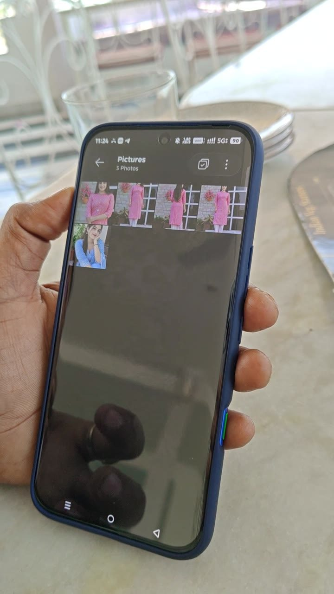
Creator 16: source photos in gallery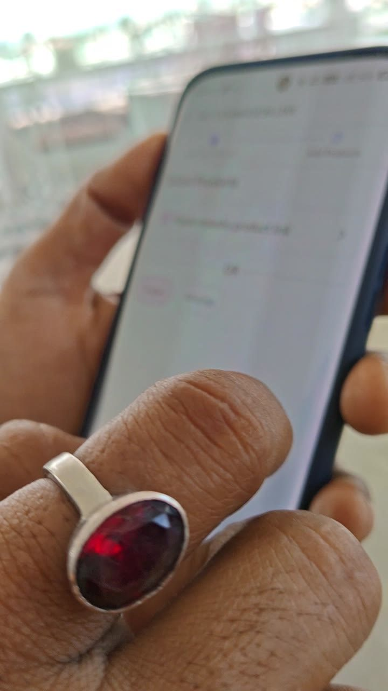
Get commission link: select products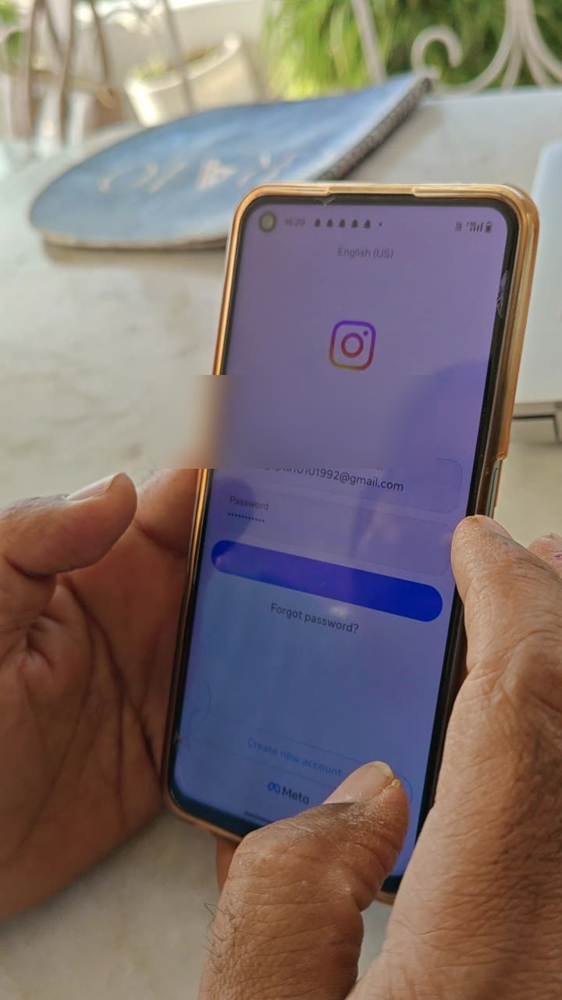
IG login inside the app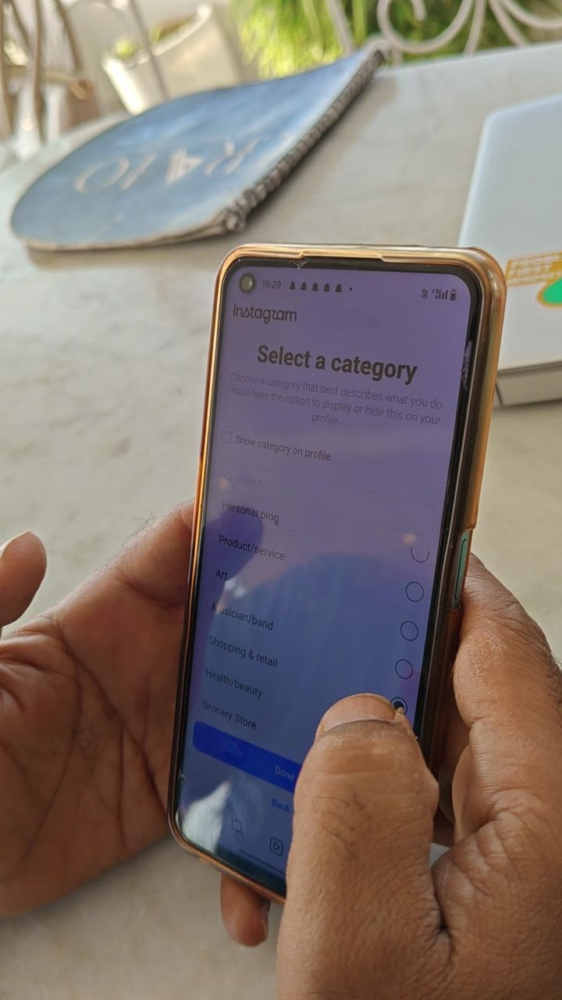
IG creator account: select a category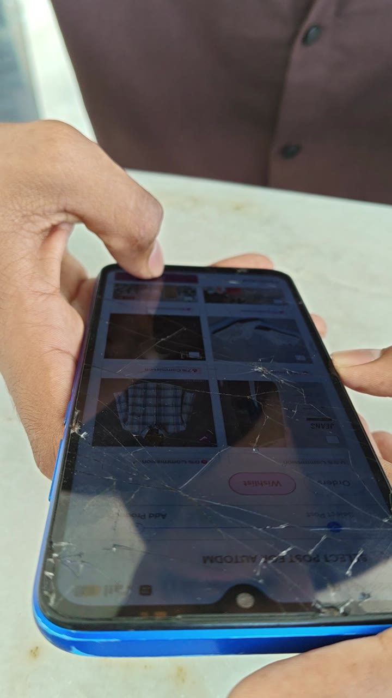
Creator 14: product grid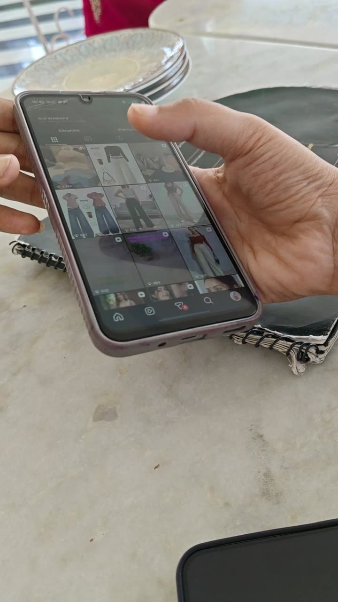
Creator 13: product used for Gemini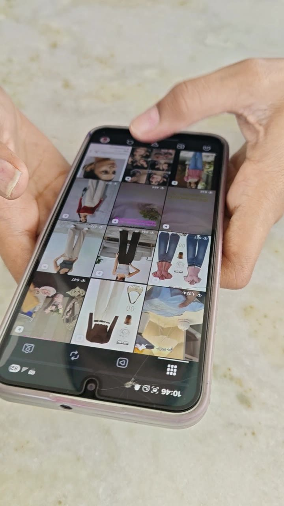
Creator 13: Instagram profile grid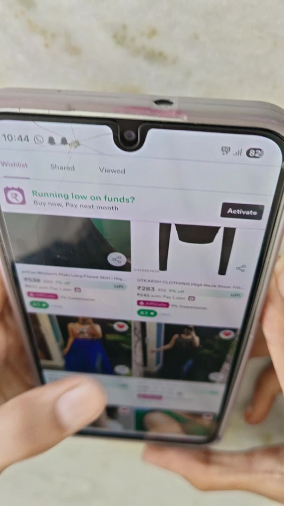
Creator 13: IG post from a product image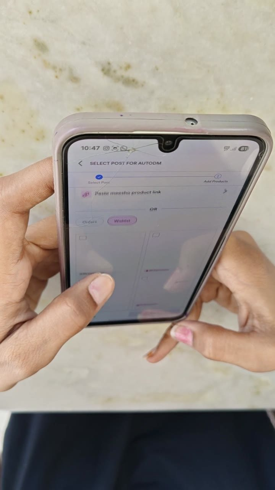
Select post for Auto-DM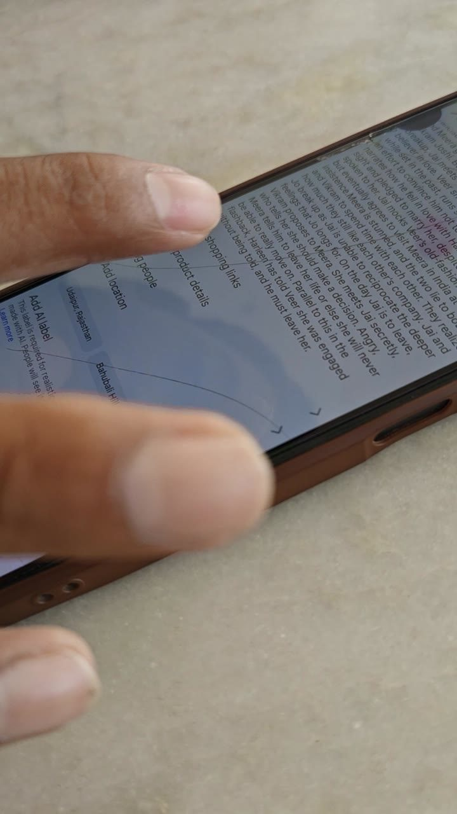
Creator 1: Instagram reel editor